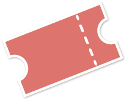

Het logo voor Parc Malot Concerts is ontworpen met de gedachten van het park in mijn achterhoofd. Ik wou eerst een micro nemen, met als het deel waar je in zingt en geluid opneemt, in de vorm van een blad. Dit kon ik niet tot een goed eind brengen, dus heb ik ervoor gekozen om een micro te nemen, dit aangevuld blaadjes
Het lettertype is Advent Pro, vandaar dat ik de huisstijl ook daarop gebasseerd heb. Dit is het eindresultaat in verschillende versies.

Ik werk met een accentkleur, namelijk hsla(6, 61%, 64%, 1).
Andere "kleuren" die worden gebruikt zijn: zwart (RGB 0,0,0) en een grijswaarde, namelijk RGB (90, 90, 90).
Dit zijn enkele voorbeelden van buttons op de website.
Zoals je kan zien, is er bovenaan meer marge dan onderaan.
Info
Tekstkleur: hsla (6, 61%, 64%, 1)
Lettertype: Advent Pro
Font-size: 20px
Padding: 10px
Marge-top: 20px
Marge-bottom: 50px
Ga naar de officiële website
lees artikel >
Wachtwoord vergeten?
Info
Elke link staat is 16px.
Het lettertype is afwisselend Advent Pro en Lato.
Opvallende links zijn voornamelijk in Advent Pro, in het kleur hsla(6, 61%, 64%, 1).
Bij hover verandert het kleur in een grijswaarde, namelijk RGB (90, 90, 90).
Bij underlined links verandert de text-decoration in none.
Bodytekst - Lato 18px - line height 28px - tekst width: 700px.
Parc Malot Concerts is een concertzaal met mogelijkheden van diverse
concertoptredens tot dansoptredens. Iedereen is zeker welkom, voor iedereen wat
wils, verschillende genres voor jong en oud. De belangrijkste doelgroep is echter
jongvolwassenen (tussen 16-25jaar), dat spreekt voor zich dat het grootste deel van de
concerten gericht zijn op die leeftijdscategorie. Voordien en nadien kan je genieten van
een hapje en een drankje in ons cultuurcafé Café Parc Malot.
Een concertzaal met vele mogelijkheden, van muziekconcerten tot dansoptredens.
Omringd door een gezellig park met een eigen cultuurcafé voor een hapje en een
drankje.
De concertzaal is gelegen te Gent in Oost-Vlaanderen, geconstrueerd op een heuveltje in het
grote park Parc Malot (als je denkt aan een concertzaal in een park, dan moet het
inderdaad wel een héél groot park zijn).
Het cultuurcafé Café Parc Malot is ook
gevestigd in dat park, allemaal aangrenzend bij elkaar. Het is goed en veilig bereikbaar
en dicht bij de autosnelweg.
Bij de artiestenkader wordt een icoontje gebruikt voor de tickets en voor de locatie.
Dit wordt beide klein weergegeven, in 12px.

Bij de artiestenkaders wordt gebruik gemaakt van een box shadow bij hover. Wanneer je hovert over de foto wordt de foto groter en lichter.
De naam van de artiest of het event wordt groot weergegeven met daar boven de datum. Je kan verder gaan naar info en tickets, je ziet de genres en de locatie.
Tickets en info
Hollandse hitmaker komtterug naar PMC met een spectaculair album dat je zeker live gehoord moet hebben!
pop | singer-songwriter
pmc grote zaal
Tickets en info
Milo Meskens’s unique recipe for pop, folk and blues has been well received!
pop | dance | singer-songwriter
pmc kleine zaal